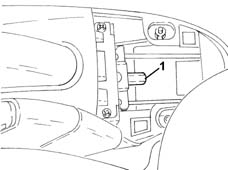
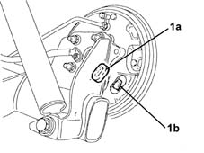
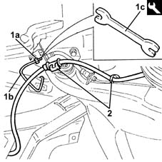
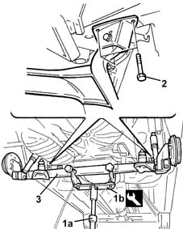
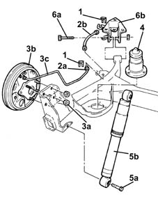
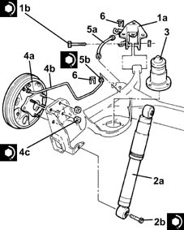
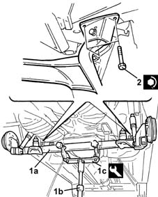
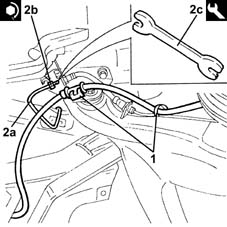

4420D20 rear suspension axle -replace- includes r+r, check, parts transfer and bleeding
- Path
- Procedures > 44 SUSPENSION AND WHEELS > 4420 REAR SUSPENSION > 4420D rear suspension axle/crossbeam > 4420D20 rear suspension axle -replace- includes r+r, check, parts transfer and bleeding
- Kind
- repair procedure (removal / refitting; the operation number is the code)
- Applies to
- all engines; all production periods
- Interactive page
- https://sloeber94.github.io/elrnDB-lYpsln/en/#/2429247
Applies to: all engines; all production periods
 Removing
Removing
 Refitting
RefittingPosition the vehicle on the ramp.
Proceed with removal 7040L22 REAR TRIM on TUNNEL -R.R. .
1. Loosen the handbrake cable adjustment nut.

Applies to: all engines; all production periods
Proceed with removal 4420A48 rear suspension coil springs- r r .
Proceed with removal 4450B13 rear wheels(2) r r .
1. Remove the protective covers (1a) and disconnect the handbrake cables (1b) from the attachments on the shoes.

Applies to: all engines; all production periods
Remove the protective cap from the bleed screw for the rear brake cylinder.
Connect the collection system (pipe and reservoir) to the rear brake cylinder bleed valve.
Loosen the bleed valve on the rear brake cylinder.
Wait for the system to drain.
1. Undo the connector (1a) and disconnect the rigid pipe from the connector to the rear brakes (1b), flexible pipe side, using the tool (1c).
 | Name | Country |
|---|---|---|
1c | Box wrench for brake fittings | 1.856.132.000 |
2. Release the handbrake cables from the fastenings on the rear suspension axle.

Applies to: all engines; all production periods
1. Support the rear suspension axle using a hydraulic jack (1a) fitted with tool (1b).
| Name | Country |
|---|---|---|
1b | Mount | 1.870.602.000 |
2. Undo the bolts fixing the rear suspension axle to the bodyshell.
3. Slowly lower the hydraulic jack and remove the rear suspension axle assembly.

Applies to: all engines; all production periods
Position the rear suspension axle assembly on a special workbench.
1. Remove the retaining clips.
2. Undo the connectors (2a) and remove the intermediate rear flexible brake pipes (2b).
3. Undo the nuts (3a) and remove the rear brake assemblies (3b), complete with rigid pipes to the rear brake cylinders (3c).
4. Remove the rear suspension end of travel buffers.
5. Undo the lower bolts (5a) and remove the rear suspension shock absorbers (5b).
6. Undo the bolts (6a) and remove the rear suspension axle supports (6b).

Applies to: all engines; all production periods
Refitting
Removing.
1. Place the rear suspension axle supports (1a) in their housings and secure them tightening the bolts (1b) to the recommended torque.
 | Fastening | Component | Ø | Value (daNm) |
|---|---|---|---|---|
1b | Bolt | REAR SUSPENSION AXLE SUPPORTS | M12 | (Axle side) 8.6 ÷ 9.5 |
2. Place the rear suspension shock absorbers (2a) back in their housings and secure using tightening the lower bolts (2b) to the recommended torque.
| Fastening | Component | Ø | Value (daNm) |
|---|---|---|---|---|
2b | Bolt | REAR DAMPER | M12 | (Axle side) 9.5 ÷ 10.5 |
3. Place the rear suspension end of travel buffers in their housings.
4. Place the rear brake assemblies (4a), complete with rear brake cylinder rigid pipes (4b), back in their housings and secure them tightening the nuts (4c) to the recommended torque.
| Fastening | Component | Ø | Value (daNm) |
|---|---|---|---|---|
4c | Nut | REAR KNUCKLE | M10 | (Axle side) 5.4 ÷ 6.6 |
5. Place the rear brake intermediate flexible pipes (5a) in their housings and tighten the connectors (5b) to the recommended torque using the tool.
| Fastening | Component | Ø | Value (daNm) |
|---|---|---|---|---|
5b | Connector | RIGID PIPE REAR CYLINDERS (ABS) | - | (Flexible pipe side) 1.4 ÷ 1.8 |
| Name | Country |
|---|---|---|
- | Box wrench for brake fittings | 1.856.132.000 |
6. Refit the retaining clips in their seats.

Applies to: all engines; all production periods
1. Place the rear suspension axle (1a) in its housing using a hydraulic jack (1b) fitted with tool (1c).
| Name | Country |
|---|---|---|
1c | Mount | 1.870.602.000 |
2. Tighten the bolts fixing the rear suspension axle to the bodyshell to the recommended torque.
| Fastening | Component | Ø | Value (daNm) |
|---|---|---|---|---|
2 | Bolt | REAR SUSPENSION AXLE SUPPORTS | M10 | (Bodyshell side) 5.4 ÷ 6.6 |

Applies to: all engines; all production periods
Remove the hydraulic jack and tool used for supporting the rear suspension axle.
1. Secure the handbrake cables to the fastenings on the rear suspension axle.
2. Connect the rigid pipe to the rear brake connector (2a), flexible pipe side and tighten the connector (2b) to the recommended torque using the tool (2c).
| Fastening | Component | Ø | Value (daNm) |
|---|---|---|---|---|
2b | Connector | RIGID PIPE REAR CYLINDERS (ABS) | - | (Flexible pipe side) 1.4 ÷ 1.8 |
| Name | Country |
|---|---|---|
2c | Box wrench for brake fittings | 1.856.132.000 |

Applies to: all engines; all production periods
Connect the handbrake cables to the attachments on the shoes.
Place the protective covers in their housings.
Proceed with refitting 4450B13 rear wheels(2) r r .
Proceed with refitting 4420A48 rear suspension coil springs- r r .
Proceed with refitting 0010T64 brake and or clutch fluid check level and top up as necessary .
Proceed with refitting 0010T65 hydraulic brake system bleed air .
Proceed with refitting 3380A04 handbrake - check travel .
Proceed with refitting 7040L22 REAR TRIM on TUNNEL -R.R. .
Remove the car from the ramps.